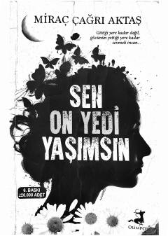

SOSevgi va hayotiy kechinmalar haqida ta'sirli asar.
Ushbu kitob insonning sevgi va tuyg'ulari haqida hikoya qiluvchi ta'sirli asar hisoblanadi. Muallif hayotdagi turli hissiy kechinmalar va insoniy munosabatlarni o'ziga xos tarzda yoritib beradi. Kitobxonlarni o'ylantiradigan va qalbga yaqin mavzularni o'z ichiga oladi.